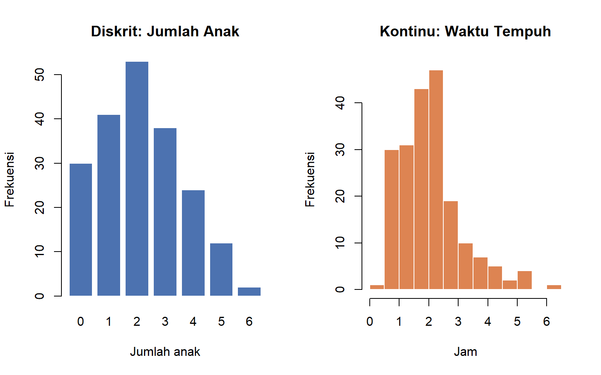
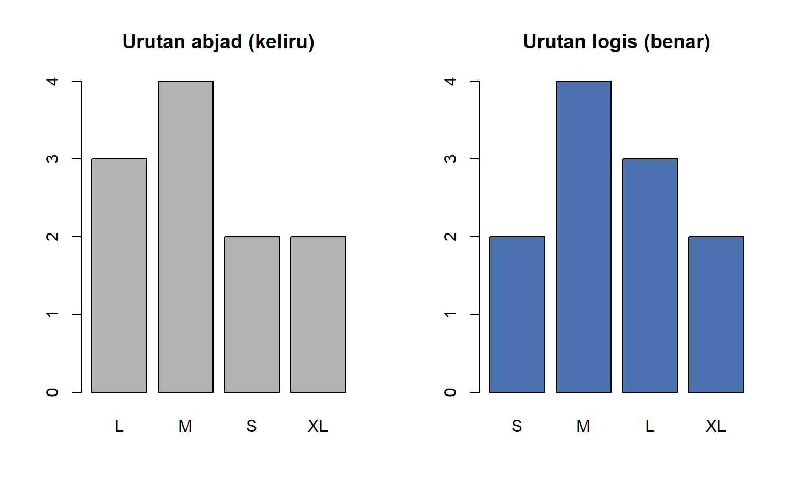

Introduction to Statistics (SDT-1102)
Practicum 1: Jenis Data dan Skala Pengukuran
Abyan Fathin Pradafi
Mahasiswa Institut Teknologi Sains Bandung prodi Data Science yang tertarik pada bidang Data Analyst. Memiliki rasa ingin tahu tinggi terhadap ekosistem IT dari POV Development, IT Support, hingga IT Infrastructure.
1 Jenis Data
1.1 Kualitatif vs Kuantitatif
| Jenis | Definisi | Contoh | Ringkasan yang tepat |
|---|---|---|---|
| Kualitatif (kategorik) |
Data berupa label, kategori, atau atribut | Metode pembayaran, golongan darah, tingkat pendidikan | Frekuensi, persentase, modus |
| Kuantitatif (numerik) |
Data berupa angka hasil menghitung atau mengukur yang bermakna secara aritmetika | Jumlah transaksi, berat badan, lama menonton | Mean, median, simpangan baku, dsb. |
metode_bayar <- c("QRIS", "Tunai", "QRIS", "Debit", "QRIS", "E-Wallet", "Tunai")
nominal_trx <- c(25000, 18000, 42500, 150000, 12000, 67000, 30000)
table(metode_bayar)## metode_bayar
## Debit E-Wallet QRIS Tunai
## 1 1 3 2## metode_bayar
## Debit E-Wallet QRIS Tunai
## 0.1428571 0.1428571 0.4285714 0.2857143## [1] 49214.29| Jenis | Ciri | Contoh | Cara memperoleh |
|---|---|---|---|
| Diskrit | Nilai terhitung (biasanya bilangan bulat); ada “celah” di antara nilai yang mungkin | Jumlah anak, jumlah transaksi, jumlah mahasiswa yang hadir | Menghitung (counting) |
| Kontinu | Nilai dapat berada di mana saja dalam suatu rentang, dibatasi hanya oleh ketelitian alat | Tinggi badan, waktu tempuh, suhu, kadar TSS air | Mengukur (measuring) |
Pertanyaan praktis untuk membedakan: “Apakah nilai 2,5 masuk akal?” Jumlah anak 2,5 tidak mungkin (diskrit), tetapi waktu tempuh 2,5 jam masuk akal (kontinu).
jumlah_anak <- c(0L, 2L, 1L, 3L, 2L) # L -> integer (bilangan bulat)
waktu_jam <- c(1.25, 2.5, 0.75, 3.1, 1.8) # numeric (bilangan desimal)
class(jumlah_anak); class(waktu_jam)## [1] "integer"## [1] "numeric"# Memeriksa apakah semua nilai bilangan bulat
semua_bulat <- function(x) all(x == round(x))
c(jumlah_anak = semua_bulat(jumlah_anak), waktu_jam = semua_bulat(waktu_jam))## jumlah_anak waktu_jam
## TRUE FALSEPembulatan tidak mengubah jenis data. Usia yang dicatat “21 tahun” tetap kontinu, karena usia sebenarnya terus bertambah; bilangan bulat hanya akibat cara pen- catatan. Sebaliknya, uang (Rp) secara teknis diskrit (satuan terkecil rupiah), tetapi karena rentangnya sangat besar, dalam praktik diperlakukan sebagai kontinu. Perbedaan diskrit-kontinu memengaruhi grafik yang tepat (Pertemuan 4): data diskrit dengan sedikit nilai cocok dengan diagram batang per nilai, data kontinu dengan histogram.
set.seed(21)
anak <- rpois(200, lambda = 2) # diskrit
tempuh <- rgamma(200, shape = 4, rate = 2) # kontinu (jam)
par(mfrow = c(1, 2))
barplot(table(anak), col = "#4C72B0", border = "white",
main = "Diskrit: Jumlah Anak", xlab = "Jumlah anak", ylab = "Frekuensi")
hist(tempuh, breaks = 15, col = "#DD8452", border = "white",
main = "Kontinu: Waktu Tempuh", xlab = "Jam", ylab = "Frekuensi")
1.2 Pohon Klasifikasi Data
| Tingkat 1 | Tingkat 2 | Skala yang mungkin | Contoh |
|---|---|---|---|
| Kualitatif | Tanpa urutan | Nominal | Provinsi, merek ponsel |
| Kualitatif | Berurutan | Ordinal | Tingkat pendidikan, peringkat hotel |
| Kuantitatif | Diskrit | Rasio (umumnya) | Jumlah kunjungan |
| Kuantitatif | Kontinu | Interval atau rasio | Suhu °C (interval), berat (rasio) |
2 Sumber Data
2.1 Data Primer vs Sekunder
| Aspek | Data Primer | Data Sekunder |
|---|---|---|
| Definisi | Dikumpulkan sendiri oleh peneliti untuk tujuan penelitiannya | Dikumpulkan pihak lain untuk tujuan lain, lalu dipakai ulang |
| Contoh | Kuesioner kepuasan yang Anda sebar; pengukuran sampel air di lapangan | Data BPS, laporan keuangan emiten, dataset Kaggle, log transaksi perusahaan |
| Kelebihan | Sesuai kebutuhan; definisi variabel dan metode diketahui persis | Murah, cepat, sering berukuran besar dan mencakup periode panjang |
| Kelemahan | Mahal, lama, butuh desain yang cermat | Definisi variabel mungkin tidak sesuai; kualitas dan cara pengumpulan harus diverifikasi |
Dalam data science, sebagian besar pekerjaan memakai data sekunder (misalnya data transaksi yang tercatat otomatis). Karena kita tidak mengumpulkannya sendiri, metadata – keterangan tentang arti tiap variabel, satuan, kode, periode, dan cara pengumpulan – menjadi sangat penting.
2.2 Menjelajahi Data Sekunder di R
R menyediakan banyak dataset sekunder bawaan beserta dokumentasinya. Contohnya airquality: pengukuran kualitas udara harian di New York (Mei–September 1973).
## 'data.frame': 153 obs. of 6 variables:
## $ Ozone : int 41 36 12 18 NA 28 23 19 8 NA ...
## $ Solar.R: int 190 118 149 313 NA NA 299 99 19 194 ...
## $ Wind : num 7.4 8 12.6 11.5 14.3 14.9 8.6 13.8 20.1 8.6 ...
## $ Temp : int 67 72 74 62 56 66 65 59 61 69 ...
## $ Month : int 5 5 5 5 5 5 5 5 5 5 ...
## $ Day : int 1 2 3 4 5 6 7 8 9 10 ...Tanpa membaca dokumentasi (?airquality), kita tidak tahu bahwa Ozone diukur dalam ppb, Temp dalam °F (bukan °C), dan Month dikodekan 5–9 untuk Mei–September. Inilah pentingnya metadata.
metadata_airquality <- data.frame(
Variabel = names(airquality),
Keterangan = c("Rata-rata ozon 13.00-15.00", "Radiasi matahari 08.00-12.00",
"Rata-rata kecepatan angin 07.00-10.00", "Suhu maksimum harian",
"Bulan pengamatan", "Tanggal pengamatan"), Satuan = c("ppb", "Langley", "mil/jam", "°F", "Kode 5-9 (Mei-Sep)", "1-31")
)
knitr::kable(metadata_airquality, caption = "Kamus Data (Data Dictionary) airquality")| Variabel | Keterangan | Satuan |
|---|---|---|
| Ozone | Rata-rata ozon 13.00-15.00 | ppb |
| Solar.R | Radiasi matahari 08.00-12.00 | Langley |
| Wind | Rata-rata kecepatan angin 07.00-10.00 | mil/jam |
| Temp | Suhu maksimum harian | °F |
| Month | Bulan pengamatan | Kode 5-9 (Mei-Sep) |
| Day | Tanggal pengamatan | 1-31 |
## Ozone Solar.R Wind Temp Month Day
## 37 7 0 0 0 02.3 Mensimulasikan Data Primer
Data primer biasanya berasal dari formulir atau kuesioner yang Anda rancang. Contoh: hasil formulir online yang diekspor ke CSV. Di sini isi CSV kita tulis langsung sebagai teks.
csv_survei <- "responden,usia,jenis_kelamin,pendidikan,kepuasan,pengeluaran_bulanan
R01,23,P,S1,Puas,1250000
R02,31,L,SMA,Sangat Puas,980000
R03,27,P,S2,Netral,2100000
R04,45,L,S1,Tidak Puas,1750000
R05,19,P,SMA,Puas,650000
R06,38,L,D3,Sangat Tidak Puas,1400000"
survei <- read.csv(text = csv_survei, stringsAsFactors = FALSE)
str(survei)## 'data.frame': 6 obs. of 6 variables:
## $ responden : chr "R01" "R02" "R03" "R04" ...
## $ usia : int 23 31 27 45 19 38
## $ jenis_kelamin : chr "P" "L" "P" "L" ...
## $ pendidikan : chr "S1" "SMA" "S2" "S1" ...
## $ kepuasan : chr "Puas" "Sangat Puas" "Netral" "Tidak Puas" ...
## $ pengeluaran_bulanan: int 1250000 980000 2100000 1750000 650000 1400000Perhatikan: read.csv() membaca pendidikan dan kepuasan sebagai teks biasa (chr). R tidak tahu bahwa “SMA < D3 < S1 < S2” atau bahwa “Puas” lebih baik dari “Netral”. Informasi urutan itu harus kita tambahkan – inilah topik bagian berikutnya.
3 Skala Pengukuran
| Skala | Sifat baru | Arti | Contoh |
|---|---|---|---|
| Nominal | Identitas | Nilai hanya membedakan kategori | Golongan darah, metode pembayaran, jenis kelamin |
| Ordinal | + Urutan | Kategori dapat diurutkan, tetapi jarak antarkategori tidak pasti sama | Tingkat kepuasan, pendidikan terakhir, peringkat lomba |
| Interval | + Jarak sama | Selisih antarnilai bermakna dan setara, tetapi nol tidak mutlak | Suhu °C/°F, tahun kalender, skor IQ |
| Rasio | + Nol mutlak | Nol berarti “tidak ada sama sekali”, sehingga perbandingan (rasio) bermakna | Berat, pendapatan, jumlah transaksi, suhu Kelvin |
3.1 Operasi yang Sah untuk Tiap Skala
| Operasi / Statistik | Nominal | Ordinal | Interval | Rasio |
|---|---|---|---|---|
| Frekuensi, modus | Ya | Ya | Ya | Ya |
| Mengurutkan, median, persentil | Tidak | Ya | Ya | Ya |
| Penjumlahan/selisih, mean, simpangan baku | Tidak | Diperdebatkan | Ya | Ya |
| Perbandingan “dua kali lipat”, koefisien variasi | Tidak | Tidak | Tidak | Ya |
Tabel ini akan terus kita pakai: pada Pertemuan 5 untuk memilih ukuran pemusatan, dan pada paruh kedua semester untuk memilih uji statistik.
3.2 Nominal: Angka Hanya Sebagai Label
Jika kategori nominal dikodekan dengan angka, R akan dengan senang hati menghitung rata- ratanya – dan hasilnya tidak bermakna.
# Kode provinsi: 31 = DKI Jakarta, 32 = Jawa Barat, 33 = Jawa Tengah, 73 = Sulawesi Selatan
kode_prov <- c(32, 32, 31, 73, 33, 32, 31)
mean(kode_prov) # "rata-rata provinsi" = 36,3 -> tidak bermakna!## [1] 37.71429# Perlakukan sebagai kategori
prov <- factor(kode_prov, levels = c(31, 32, 33, 73),
labels = c("DKI Jakarta", "Jawa Barat", "Jawa Tengah", "Sulawesi Selatan"))
table(prov)## prov
## DKI Jakarta Jawa Barat Jawa Tengah Sulawesi Selatan
## 2 3 1 1## [1] "Jawa Barat"3.3 Ordinal: Berurutan, Jarak Tidak Pasti
Pada skala kepuasan “Sangat Tidak Puas – Tidak Puas – Netral – Puas – Sangat Puas”, kita tahu urutannya, tetapi tidak tahu apakah jarak “Netral ke Puas” sama dengan jarak “Puas ke Sangat Puas”.
tingkat_puas <- c("Sangat Tidak Puas", "Tidak Puas", "Netral", "Puas", "Sangat Puas")
survei$kepuasan <- factor(survei$kepuasan, levels = tingkat_puas, ordered = TRUE)
survei$pendidikan <- factor(survei$pendidikan, levels = c("SMA", "D3", "S1", "S2"),
ordered = TRUE)
survei$kepuasan## [1] Puas Sangat Puas Netral Tidak Puas
## [5] Puas Sangat Tidak Puas
## Levels: Sangat Tidak Puas < Tidak Puas < Netral < Puas < Sangat Puas## [1] TRUE TRUE FALSE FALSE TRUE FALSE##
## Sangat Tidak Puas Tidak Puas Netral Puas
## 1 1 1 2
## Sangat Puas
## 1# Median untuk data ordinal: kategori tengah setelah diurutkan.
# Jika n genap dan dua data tengah berbeda kategori, median berada "di antara" keduanya.
median_ordinal <- function(x) {
m <- median(as.integer(x), na.rm = TRUE)
if (m == floor(m)) return(levels(x)[m])
paste("antara", levels(x)[floor(m)], "dan", levels(x)[ceiling(m)])
}
sort(as.integer(survei$kepuasan)) # posisi urutan tiap responden## [1] 1 2 3 4 4 5## [1] "antara Netral dan Puas"Likert: mean atau median? Skor Likert (1–5) dari satu butir pertanyaan secara ketat bersifat ordinal, sehingga median dan modus lebih tepat. Dalam praktik, jumlah atau rata-rata dari banyak butir (misalnya indeks kepuasan dari 10 pertanyaan) sering diperlakukan sebagai data interval. Apa pun pilihannya, nyatakan asumsi Anda.
3.4 Interval: Selisih Bermakna, Rasio Tidak
Suhu dalam °C memiliki jarak yang setara (naik dari 10 ke 20 °C sama besarnya dengan dari 20 ke 30 °C), tetapi titik 0 °C bukan “tidak ada panas” – hanya titik beku air yang dipilih secara konvensi. Akibatnya, “20 °C dua kali lebih panas dari 10 °C” adalah pernyataan keliru.
suhu_c <- c(pagi = 10, siang = 20)
suhu_f <- suhu_c * 9 / 5 + 32
suhu_k <- suhu_c + 273.15
knitr::kable(data.frame(
Satuan = c("Celsius", "Fahrenheit", "Kelvin"),
Pagi = c(suhu_c["pagi"], suhu_f["pagi"], suhu_k["pagi"]),
Siang = c(suhu_c["siang"], suhu_f["siang"], suhu_k["siang"]),
Rasio_Siang_per_Pagi = round(c(suhu_c["siang"] / suhu_c["pagi"],
suhu_f["siang"] / suhu_f["pagi"],
suhu_k["siang"] / suhu_k["pagi"]), 3),
Selisih = c(diff(suhu_c), diff(suhu_f), diff(suhu_k))
), caption = "Suhu yang sama dalam tiga satuan")| Satuan | Pagi | Siang | Rasio_Siang_per_Pagi | Selisih |
|---|---|---|---|---|
| Celsius | 10.00 | 20.00 | 2.000 | 10 |
| Fahrenheit | 50.00 | 68.00 | 1.360 | 18 |
| Kelvin | 283.15 | 293.15 | 1.035 | 10 |
“Rasio” suhu berubah-ubah tergantung satuan (2 kali dalam °C, 1,36 kali dalam °F, 1,035 kali dalam Kelvin) – tanda bahwa rasio pada skala interval tidak bermakna. Hanya Kelvin, yang nolnya mutlak, yang merupakan skala rasio.
3.5 Rasio: Semua Operasi Sah
Pada skala rasio, perbandingan tetap sama berapa pun satuannya.
berat_kg <- c(koper_A = 10, koper_B = 20)
berat_lb <- berat_kg * 2.20462
c(Rasio_kg = unname(berat_kg["koper_B"] / berat_kg["koper_A"]),
Rasio_lb = unname(berat_lb["koper_B"] / berat_lb["koper_A"]))## Rasio_kg Rasio_lb
## 2 2Koper B benar-benar dua kali lebih berat dari koper A, dalam satuan apa pun. Karena itu koefisien variasi (Pertemuan 5) hanya sah untuk skala rasio.
3.6 Menentukan Skala: Empat Pertanyaan Berurutan
| Langkah | Pertanyaan | Jika “Tidak” | Jika “Ya” |
|---|---|---|---|
| 1 | Apakah nilainya dapat diurutkan secara bermakna? | Nominal | Lanjut ke 2 |
| 2 | Apakah jarak antarnilai setara dan bermakna? | Ordinal | Lanjut ke 3 |
| 3 | Apakah nol berarti “tidak ada sama sekali”? | Interval | Rasio |
tentukan_skala <- function(bisa_diurutkan, jarak_setara, nol_mutlak) {
if (!bisa_diurutkan) return("Nominal")
if (!jarak_setara) return("Ordinal")
if (!nol_mutlak) return("Interval")
"Rasio"
}
contoh <- data.frame(
Variabel = c("Golongan darah", "Peringkat lomba", "Tahun lahir", "Jumlah Transaksi QRIS", "Kadar TSS air (mg/L)", "Ukuran baju (S/M/L/XL)"),
urut = c(FALSE, TRUE, TRUE, TRUE, TRUE, TRUE),
jarak = c(FALSE, FALSE, TRUE, TRUE, TRUE, FALSE),
nol = c(FALSE, FALSE, FALSE, TRUE, TRUE, FALSE)
)
contoh$Skala <- mapply(tentukan_skala, contoh$urut, contoh$jarak, contoh$nol)
knitr::kable(contoh, caption = "Contoh Penentuan Skala Pengukuran")| Variabel | urut | jarak | nol | Skala |
|---|---|---|---|---|
| Golongan darah | FALSE | FALSE | FALSE | Nominal |
| Peringkat lomba | TRUE | FALSE | FALSE | Ordinal |
| Tahun lahir | TRUE | TRUE | FALSE | Interval |
| Jumlah Transaksi QRIS | TRUE | TRUE | TRUE | Rasio |
| Kadar TSS air (mg/L) | TRUE | TRUE | TRUE | Rasio |
| Ukuran baju (S/M/L/XL) | TRUE | FALSE | FALSE | Ordinal |
4 Skala dan Tipe Data di R
4.1 Memetakan Skala ke Tipe Data
| Langkah | Pertanyaan | Jika “Tidak” | Jika “Ya” |
|---|---|---|---|
| 1 | Apakah nilainya dapat diurutkan secara bermakna? | Nominal | Lanjut ke 2 |
| 2 | Apakah jarak antarnilai setara dan bermakna? | Ordinal | Lanjut ke 3 |
| 3 | Apakah nol berarti “tidak ada sama sekali”? | Interval | Rasio |
Tipe yang tepat membuat R membantu kita: grafik mengikuti urutan kategori, fungsi ringkasan memilih cara yang benar, dan model statistik memperlakukan variabel dengan semestinya.
## Sangat Tidak Puas Tidak Puas Netral Puas
## 1 1 1 2
## Sangat Puas
## 1## Min. 1st Qu. Median Mean 3rd Qu. Max.
## 650000 1047500 1325000 1355000 1662500 21000004.2 Urutan Level yang Keliru
Tanpa urutan yang ditentukan, R mengurutkan kategori menurut abjad, yang sering tidak logis:
ukuran_baju <- c("M", "L", "S", "XL", "M", "L", "M", "S", "XL", "L", "M")
par(mfrow = c(1, 2))
barplot(table(factor(ukuran_baju)), col = "grey70", main = "Urutan abjad (keliru)")
barplot(table(factor(ukuran_baju, levels = c("S", "M", "L", "XL"))), col = "#4C72B0",
main = "Urutan logis (benar)")
4.3 Jebakan: Mengonversi Factor Berisi Angka
Jika sebuah factor berisi angka, as.numeric() mengembalikan nomor urut level, bukan angkanya.
## [1] 1 2 1 3## [1] 2021 2023 2021 20244.4 Jebakan: Angka Tersimpan sebagai Teks
Data dari formulir atau spreadsheet sering memuat simbol (Rp, titik ribuan, koma desimal) sehingga terbaca sebagai teks.
harga_teks <- c("Rp 12.500", "Rp 8.000", "Rp 150.000", "Rp 27.250")
# mean(harga_teks) akan menghasilkan NA disertai peringatan
harga <- as.numeric(gsub("[^0-9]", "", harga_teks)) # buang semua karakter non-angka
harga## [1] 12500 8000 150000 27250## [1] 49437.55 Struktur Dataset
5.1 Observasi, Variabel, Feature, dan Target
| Istilah statistika | Istilah machine learning | Posisi dalam tabel | Contoh |
|---|---|---|---|
| Observasi (unit observasi, kasus) | Instance, sample, record | Baris | Satu bunga iris |
| Variabel | Attribute, column | Kolom | Panjang kelopak |
| Variabel independen | Feature (prediktor, \(X\)) | Kolom yang dipakai untuk memprediksi | Panjang dan lebar kelopak/mahkota |
| Variabel dependen | Target (label, respons, \(y\)) | Kolom yang ingin diprediksi | Spesies |
## 'data.frame': 150 obs. of 5 variables:
## $ Sepal.Length: num 5.1 4.9 4.7 4.6 5 5.4 4.6 5 4.4 4.9 ...
## $ Sepal.Width : num 3.5 3 3.2 3.1 3.6 3.9 3.4 3.4 2.9 3.1 ...
## $ Petal.Length: num 1.4 1.4 1.3 1.5 1.4 1.7 1.4 1.5 1.4 1.5 ...
## $ Petal.Width : num 0.2 0.2 0.2 0.2 0.2 0.4 0.3 0.2 0.2 0.1 ...
## $ Species : Factor w/ 3 levels "setosa","versicolor",..: 1 1 1 1 1 1 1 1 1 1 ...X <- iris[, c("Sepal.Length", "Sepal.Width", "Petal.Length", "Petal.Width")] #feature
y <- iris$Species #target
dim(X) # 150 observasi x 4 feature## [1] 150 4## y
## setosa versicolor virginica
## 50 50 50Jenis target menentukan jenis tugas: | Skala target | Tugas | Contoh | |:—|:—|:—| | Nominal (2 kategori) | Klasifikasi biner | Pelanggan churn atau tidak | | Nominal (> 2 kategori) | Klasifikasi multikelas | Spesies iris | | Ordinal | Klasifikasi ordinal | Tingkat risiko kredit rendah/sedang/tinggi | | Interval/rasio | Regresi | Harga rumah, kadar TSS |
5.2 Tidy Data
Sebuah dataset disebut tidy jika memenuhi tiga prinsip:
- Setiap variabel menempati satu kolom.
- Setiap observasi menempati satu baris.
- Setiap nilai menempati satu sel.
Hampir semua fungsi statistika di R mengasumsikan data tidy.
5.3 Format Wide vs Long
Data yang sama dapat disusun dalam dua format. Contoh: kadar TSS (mg/L) di tiga titik peman- tauan selama tiga bulan.
tss_wide <- data.frame(
titik = c("Hulu", "Tengah", "Hilir"),
Jan = c(45, 120, 210),
Feb = c(38, 95, 185),
Mar = c(52, 140, 260)
)
knitr::kable(tss_wide, caption = "Format WIDE: bulan tersebar sebagai kolom")| titik | Jan | Feb | Mar |
|---|---|---|---|
| Hulu | 45 | 38 | 52 |
| Tengah | 120 | 95 | 140 |
| Hilir | 210 | 185 | 260 |
tss_long <- reshape(tss_wide, direction = "long",
varying = c("Jan", "Feb", "Mar"), v.names = "tss",
timevar = "bulan", times = c("Jan", "Feb", "Mar"), idvar = "titik")
rownames(tss_long) <- NULL
tss_long$bulan <- factor(tss_long$bulan, levels = c("Jan", "Feb", "Mar"))
knitr::kable(tss_long, caption = "Format LONG (tidy): satu baris = satu pengukuran")| titik | bulan | tss |
|---|---|---|
| Hulu | Jan | 45 |
| Tengah | Jan | 120 |
| Hilir | Jan | 210 |
| Hulu | Feb | 38 |
| Tengah | Feb | 95 |
| Hilir | Feb | 185 |
| Hulu | Mar | 52 |
| Tengah | Mar | 140 |
| Hilir | Mar | 260 |
Pada format wide, satu variabel (bulan) tersembunyi di nama-nama kolom. Format long bersifat tidy: setiap baris adalah satu pengukuran (titik x bulan), sehingga mudah diringkas per kelompok:
Format wide tetap berguna untuk menyajikan tabel kepada pembaca manusia; format long lebih cocok untuk analisis.
6 Studi Kasus Komprehensif: Membersihkan Data Pelanggan
Konteks: Tim analytics sebuah e-commerce menerima ekspor data pelanggan (data sekunder dari sistem CRM) untuk membangun model prediksi churn (pelanggan berhenti berlangganan). Datanya masih “mentah”.
csv_pelanggan <- "id,gender,kota,segmen,rating_layanan,lama_langganan_bln,total_belanja,suhu_gudang_c,churn
C001,1,Bekasi,Gold,4,26,Rp 4.250.000,24.5,Tidak
C002,2,Bandung,Silver,2,5,Rp 850.000,25.1,Ya
C003,2,Bekasi,Platinum,5,48,Rp 12.900.000,23.8,Tidak
C004,1,Surabaya,Silver,3,12,Rp 1.320.000,26.0,Tidak
C005,1,Bandung,Bronze,1,3,Rp 210.000,24.9,Ya
C006,2,Medan,Gold,4,30,Rp 5.100.000,25.4,Tidak
C007,1,Bekasi,Bronze,2,7,Rp 480.000,24.2,Ya
C008,2,Surabaya,Platinum,5,60,Rp 15.750.000,25.7,Tidak"
pelanggan <- read.csv(text = csv_pelanggan, stringsAsFactors = FALSE)
str(pelanggan)## 'data.frame': 8 obs. of 9 variables:
## $ id : chr "C001" "C002" "C003" "C004" ...
## $ gender : int 1 2 2 1 1 2 1 2
## $ kota : chr "Bekasi" "Bandung" "Bekasi" "Surabaya" ...
## $ segmen : chr "Gold" "Silver" "Platinum" "Silver" ...
## $ rating_layanan : int 4 2 5 3 1 4 2 5
## $ lama_langganan_bln: int 26 5 48 12 3 30 7 60
## $ total_belanja : chr "Rp 4.250.000" "Rp 850.000" "Rp 12.900.000" "Rp 1.320.000" ...
## $ suhu_gudang_c : num 24.5 25.1 23.8 26 24.9 25.4 24.2 25.7
## $ churn : chr "Tidak" "Ya" "Tidak" "Tidak" ...Metadata dari tim CRM: gender 1 = Laki-laki, 2 = Perempuan; segmen berurutan Bronze < Silver < Gold < Platinum; rating_layanan skala 1–5 (1 = sangat buruk); suhu_gudang_c = suhu rata-rata gudang pengirim (°C).
6.1 Langkah 1: Klasifikasi Setiap Variabel
| Variabel | Jenis data | Skala | Tipe R saat ini | Tipe R seharusnya | Peran |
|---|---|---|---|---|---|
id |
Label | \(-\) | chr |
character |
Pengenal (bukan feature) |
gender |
Kualitatif | Nominal | int |
factor |
Feature |
kota |
Kualitatif | Nominal | chr |
factor |
Feature |
segmen |
Kualitatif | Ordinal | chr |
ordered |
Feature |
rating_layanan |
Kualitatif (berkode angka) | Ordinal | int |
ordered |
Feature |
lama_langganan_bln |
Kuantitatif kontinu (dicatat bulat) | Rasio | int |
numeric |
Feature |
total_belanja |
Kuantitatif (diperlakukan kontinu) | Rasio | chr |
numeric |
Feature |
suhu_gudang_c |
Kuantitatif kontinu | Interval | num |
numeric |
Feature |
churn |
Kualitatif | Nominal (biner) | chr |
factor |
Target |
6.2 Langkah 2: Mengonversi ke Tipe yang Tepat
bersih <- within(pelanggan, {
gender <- factor(gender, levels = c(1, 2), labels = c("Laki-laki", "Perempuan"))
kota <- factor(kota)
segmen <- factor(segmen, levels = c("Bronze", "Silver", "Gold", "Platinum"),
ordered = TRUE)
rating_layanan <- factor(rating_layanan, levels = 1:5, ordered = TRUE)
total_belanja <- as.numeric(gsub("[^0-9]", "", total_belanja))
churn <- factor(churn, levels = c("Tidak", "Ya"))
})
str(bersih)## 'data.frame': 8 obs. of 9 variables:
## $ id : chr "C001" "C002" "C003" "C004" ...
## $ gender : Factor w/ 2 levels "Laki-laki","Perempuan": 1 2 2 1 1 2 1 2
## $ kota : Factor w/ 4 levels "Bandung","Bekasi",..: 2 1 2 4 1 3 2 4
## $ segmen : Ord.factor w/ 4 levels "Bronze"<"Silver"<..: 3 2 4 2 1 3 1 4
## $ rating_layanan : Ord.factor w/ 5 levels "1"<"2"<"3"<"4"<..: 4 2 5 3 1 4 2 5
## $ lama_langganan_bln: int 26 5 48 12 3 30 7 60
## $ total_belanja : num 4250000 850000 12900000 1320000 210000 ...
## $ suhu_gudang_c : num 24.5 25.1 23.8 26 24.9 25.4 24.2 25.7
## $ churn : Factor w/ 2 levels "Tidak","Ya": 1 2 1 1 2 1 2 16.3 Langkah 3: Ringkasan yang Sesuai Skala
##
## Laki-laki Perempuan
## 4 4##
## Bronze Silver Gold Platinum
## 2 2 2 2## [1] "antara 3 dan 4"## [1] 5107500## [1] 75##
## Tidak Ya
## Bronze 0 2
## Silver 1 1
## Gold 2 0
## Platinum 2 06.4 Langkah 4: Memisahkan Feature dan Target
## [1] "gender" "kota" "segmen"
## [4] "rating_layanan" "lama_langganan_bln" "total_belanja"
## [7] "suhu_gudang_c"## y_pel
## Tidak Ya
## 5 36.5 Pertanyaan Diskusi dan Jawaban
1. Mengapa gender tidak boleh dibiarkan sebagai int?
Karena angka 1 dan 2 hanya kode. Jika dibiarkan numerik, model akan
menganggap “Perempuan = 2 kali Laki-laki” atau menghitung rata-rata
gender (misalnya 1,5) yang tidak bermakna.
2. Bolehkah
kita menyatakan “rata-rata rating layanan = 3,25”?
Secara
ketat tidak, karena rating_layanan adalah satu butir skala ordinal –
jarak antara rating 1 ke 2 belum tentu sama dengan 4 ke 5. Laporan yang
aman: median (antara 3 dan 4) dan distribusi frekuensinya. Jika mean
tetap dilaporkan, nyatakan bahwa rating diasumsikan berskala interval.
3. Mengapa rasio “suhu gudang C003 dibanding C001”
tidak bermakna, sementara rasio total belanja bermakna?
Suhu °C berskala interval (nol tidak mutlak), sedangkan total belanja
berskala rasio (Rp 0 be- rarti tidak berbelanja sama sekali). Pelanggan
C008 benar-benar berbelanja sekitar 75 kali lipat pelanggan C005.
4. Mengapa id dikeluarkan dari feature? id unik
untuk setiap pelanggan dan tidak memuat informasi perilaku.
Memasukkannya dapat membuat model “menghafal” pelanggan, bukan
mempelajari pola.
7 Latihan Mandiri
7.1 Latihan Utama: Dataset airquality
Gunakan dataset bawaan airquality (data sekunder).
7.1.1 Tugas 1: Klasifikasikan setiap variabel
Jawaban:
| Variabel | Jenis | Skala | Alasan |
|---|---|---|---|
Ozone |
Kuantitatif kontinu | Rasio | 0 ppb berarti tidak ada ozon |
Solar.R |
Kuantitatif kontinu | Rasio | 0 berarti tidak ada radiasi |
Wind |
Kuantitatif kontinu | Rasio | 0 mil/jam berarti tidak ada angin |
Temp |
Kuantitatif kontinu | Interval | Suhu °F tidak memiliki nol mutlak |
Month |
Kualitatif (berkode angka) | Ordinal | Bulan berurutan; kodenya label |
Day |
Kualitatif (berkode angka) | Ordinal | Menunjukkan urutan tanggal, bukan kuantitas |
7.1.2 Tugas 2: Ubah Month menjadi factor berurutan dengan label nama bulan
aq <- airquality
aq$Month <- factor(aq$Month, levels = 5:9,
labels = c("Mei", "Jun", "Jul", "Agu", "Sep"), ordered = TRUE)
table(aq$Month)##
## Mei Jun Jul Agu Sep
## 31 30 31 31 307.1.3 Tugas 4: Konversi Temp ke °C dan Kelvin, lalu jelaskan mengapa rasio suhu
hanya sah pada Kelvin
aq$Temp_C <- (aq$Temp - 32) * 5 / 9
aq$Temp_K <- aq$Temp_C + 273.15
suhu_ekstrem <- aq[c(which.min(aq$Temp), which.max(aq$Temp)), c("Temp", "Temp_C", "Temp_K")]
suhu_ekstremJawaban: Hari terpanas “tampak” 1.73 kali lebih panas dalam °F dan 2.71 kali dalam °C, tetapi hanya 1.08 kali dalam Kelvin. Hanya Kelvin yang nolnya mutlak, sehingga hanya rasio Kelvin yang
7.1.4 Tugas 5: Tentukan feature dan target
bermakna secara fisik.
Jika tujuannya memprediksi kadar ozon dari kondisi cuaca, tentukan feature, target, dan jenis tugasnya.
Jawaban: Target = Ozone (rasio) sehingga tugasnya regresi; feature = Solar.R, Wind, Temp, dan Month. Day sebaiknya tidak dipakai langsung karena hanya urutan tanggal.
7.1.5 Tugas 6 (Tantangan): Ubah ke format long
Ubah kolom Ozone, Wind, dan Temp untuk 3 hari pertama menjadi format long dengan kolom variabel dan nilai.
aq3 <- airquality[1:3, c("Month", "Day", "Ozone", "Wind", "Temp")]
aq3_long <- reshape(aq3, direction = "long", varying = c("Ozone", "Wind", "Temp"),
v.names = "nilai", timevar = "variabel",
times = c("Ozone", "Wind", "Temp"), idvar = c("Month", "Day"))
rownames(aq3_long) <- NULL
aq3_longCatatan: format long seperti ini praktis untuk visualisasi banyak variabel sekaligus, tetapi perhatikan bahwa kolom nilai kini mencampur satuan berbeda (ppb, mil/jam, °F) – jangan meringkasnya bersama-sama.
7.2 Latihan Tambahan (Self-Check)
Kerjakan soal-soal berikut secara mandiri sebelum melihat kunci
jawaban pada komentar kode.
Soal A. Tentukan
skala pengukuran: (1) nomor punggung pemain, (2) peringkat klasemen
liga, (3) skor TOEFL, (4) waktu lari 100 m, (5) tahun berdirinya
perusahaan, (6) jumlah karyawan, (7) tingkat keparahan gempa pada skala
MMI (I–XII).
# Kunci jawaban:
# (1) Nominal (2) Ordinal (3) Interval (skor tanpa nol mutlak)
# (4) Rasio (5) Interval (tahun 0 bukan "tidak ada waktu")
# (6) Rasio (7) Ordinal (tingkatan intensitas, jarak tidak setara)Soal B. Tentukan apakah data berikut diskrit atau kontinu: (1) jumlah SKS yang diambil, (2) IPK, (3) volume air hujan harian, (4) jumlah kendaraan yang melintas per jam, (5) usia dalam tahun.
# Kunci jawaban:
# (1) Diskrit (2) Kontinu (dalam rentang 0-4, dibulatkan 2 desimal)
# (3) Kontinu (4) Diskrit
# (5) Kontinu (usia terus bertambah; bilangan bulat hanya akibat pencatatan)Soal C. Diberikan vektor kelas_hotel <- c(“Bintang 3”, “Bintang 5”, “Bintang 4”, “Bintang 3”, “Bintang 5”, “Bintang 3”). Ubah menjadi ordered factor, tampilkan frekuensinya sesuai urutan, lalu tentukan medianya.
kelas_hotel <- c("Bintang 3", "Bintang 5", "Bintang 4", "Bintang 3", "Bintang 5", "Bintang 3")
# Kunci jawaban:
kelas_hotel <- factor(kelas_hotel, levels = c("Bintang 3", "Bintang 4", "Bintang 5"),
ordered = TRUE)
table(kelas_hotel) # 3, 1, 2## kelas_hotel
## Bintang 3 Bintang 4 Bintang 5
## 3 1 2## [1] "antara Bintang 3 dan Bintang 4"# Urutan kode: 1, 1, 1, 2, 3, 3 -> median = (1 + 2) / 2 = 1,5
# Pada data ordinal berukuran genap, median bisa jatuh di antara dua kategori.Soal D. Seorang analis menyatakan: “Kota A (suhu rata-rata 30 °C) dua kali lebih panas daripada Kota B (15 °C).” Apakah pernyataan ini benar? Buktikan dengan R.
## A B
## 303.15 288.15## [1] 1.0520568 Kesalahan Umum dalam Jenis Data dan Skala Pengukuran
- Menghitung mean dari kode kategori – misalnya “rata-rata gender = 1,46” atau “ratarata kode provinsi”
- Menganggap semua angka sebagai kuantitatif – nomor punggung, kode pos, dan NIM adalah label
- Membuat pernyataan rasio pada skala interval – “20 °C dua kali lebih panas dari 10 °C”.
- Mengira pembulatan membuat data menjadi diskrit – usia “21 tahun” tetap kontinu.
- Membiarkan data ordinal sebagai teks – R mengurutkannya menurut abjad sehingga grafik dan tabel menjadi tidak logis.
- Memakai as.numeric() langsung pada factor berisi angka – hasilnya nomor level; gunakan as.numeric(as.character(x)).
- Membiarkan angka tersimpan sebagai teks (“Rp 12.500”) – perhitungan menghasilkan NA.
- Memakai data sekunder tanpa membaca metadata – satuan (°F vs °C) atau kode (5 = Mei) disalahartikan.
- Memasukkan kolom ID sebagai feature – model menghafal, bukan belajar.
- Menganalisis data dalam format wide ketika sebuah variabel tersembunyi di nama kolom – ubah ke format long terlebih dahulu.
- Merata-ratakan satu butir Likert tanpa menyatakan asumsi – laporkan median/frekuensi, atau nyatakan asumsi interval secara eksplisit.
9 Cheat Sheet: Fungsi R yang Digunakan
| Fungsi | Kegunaan |
|---|---|
class(x), str(df) |
Memeriksa tipe data |
integer (2L), numeric |
Tipe bilangan bulat dan desimal |
factor(x, levels, labels) |
Data nominal; memberi label pada kode |
factor(x, levels, ordered = TRUE) |
Data ordinal |
levels(x) |
Melihat kategori dan urutannya |
as.integer(f) |
Nomor urut level sebuah factor |
as.numeric(as.character(f)) |
Mengkonversi factor berisi angka menjadi angka sebenarnya |
as.character(x) |
Mengubah menjadi teks |
gsub("[^0-9]", "", x) |
Membuang karakter selain angka |
read.csv(text = ...) /
read.csv("file.csv") |
Membaca data CSV |
is.na(x),
colSums(is.na(df)) |
Mendeteksi dan menghitung nilai hilang |
table(x),
prop.table(table(x)) |
Frekuensi dan proporsi |
within(df, {...}) |
Mengubah beberapa kolom sekaligus |
reshape(df, direction = "long") |
Mengubah format wide menjadi long |
aggregate(y ~ g, data, FUN) |
Ringkasan per kelompok |
setdiff(a, b) |
Elemen a yang tidak ada di b
(memilih kolom feature) |
mapply(f, ...) |
Menerapkan fungsi ke beberapa vektor secara berpasangan |
data(nama), ?nama |
Memuat dataset bawaan dan membaca dokumentasinya |
10 Glosarium Istilah
| Istilah | Definisi Singkat |
|---|---|
| Data Kualitatif | Data berupa label atau kategori |
| Data Kuantitatif | Data berupa angka hasil menghitung atau mengukur |
| Data Diskrit | Data kuantitatif yang nilainya terhitung (hasil menghitung) |
| Data Kontinu | Data kuantitatif yang dapat bernilai berapa pun dalam suatu rentang (hasil mengukur) |
| Data Primer | Data yang dikumpulkan sendiri untuk tujuan penelitian |
| Data Sekunder | Data yang dikumpulkan pihak lain dan dipakai ulang |
| Metadata / Kamus Data | Keterangan arti, satuan, kode, dan asal-usul setiap variabel |
| Skala Nominal | Skala yang hanya membedakan kategori |
| Skala Ordinal | Skala kategori yang dapat diurutkan, jarak tidak pasti setara |
| Skala Interval | Skala dengan jarak setara tetapi tanpa nol mutlak |
| Skala Rasio | Skala dengan jarak setara dan nol mutlak; perbandingan bermakna |
| Nol Mutlak | Titik nol yang berarti “tidak ada sama sekali” |
| Factor | Tipe data R untuk variabel kategorik |
| Ordered Factor | Factor yang kategorinya memiliki urutan |
| Observasi | Satu baris data (satu unit yang diamati) |
| Feature | Variabel masukan untuk memprediksi (variabel independen) |
| Target | Variabel yang ingin diprediksi (variabel dependen) |
| Tidy Data | Data dengan satu variabel per kolom, satu observasi per baris, satu nilai per sel |
| Format Wide / Long | Susunan data dengan pengukuran berulang sebagai kolom / sebagai baris |
11 Rangkuman dan Kesimpulan
- Data kualitatif berupa kategori; data kuantitatif berupa angka yang bermakna secara aritmetika. Data kuantitatif dibagi menjadi diskrit (menghitung) dan kontinu (mengukur).
- Data primer dikumpulkan sendiri, data sekunder dipakai ulang. Data sekunder wajib disertai metadata.
- Skala pengukuran – nominal, ordinal, interval, rasio – bersifat bertingkat. Makin tinggi skalanya, makin banyak operasi yang sah. Rasio "dua kali lipat" hanya sah pada skala rasio.
-
Tipe data di R harus mencerminkan skala:
factoruntuk nominal,ordereduntuk ordinal,numericuntuk interval/rasio. R hanya tahu tipe penyimpanan; maknanya ditentukan analis. - Dataset tidy menempatkan observasi di baris dan variabel di kolom. Dalam machine learning, variabel dibagi menjadi feature dan target, dan skala target menentukan jenis tugas (klasifikasi atau regresi).
Jembatan ke sesi berikutnya: setelah memahami jenis data, Pertemuan 3 membahas bagaimana data diperoleh – metode pengumpulan data, teknik sampling probabilitas dan non-probabilitas, serta berbagai bentuk bias yang dapat merusak kesimpulan.
12 Referensi Pendukung
Materi ini merangkum topik jenis data dan skala pengukuran (types of data and levels of measurement) yang umum dibahas pada bab awal buku teks pengantar statistika bisnis/data science. Mahasiswa disarankan melengkapi pemahaman dengan merujuk pada:
- Modul/slide perkuliahan "Introduction to Statistics (SDT-1102)" – Pertemuan 2: Jenis Data dan Skala Pengukuran.
- Stevens, S. S. (1946). On the Theory of Scales of Measurement. Science, 103(2684), 677–680.
- Wickham, H. (2014). Tidy Data. Journal of Statistical Software, 59(10).
-
Dokumentasi resmi R:
?factor,?read.csv,?reshape,?airquality,?iris(dapat diakses langsung di R/RStudio).